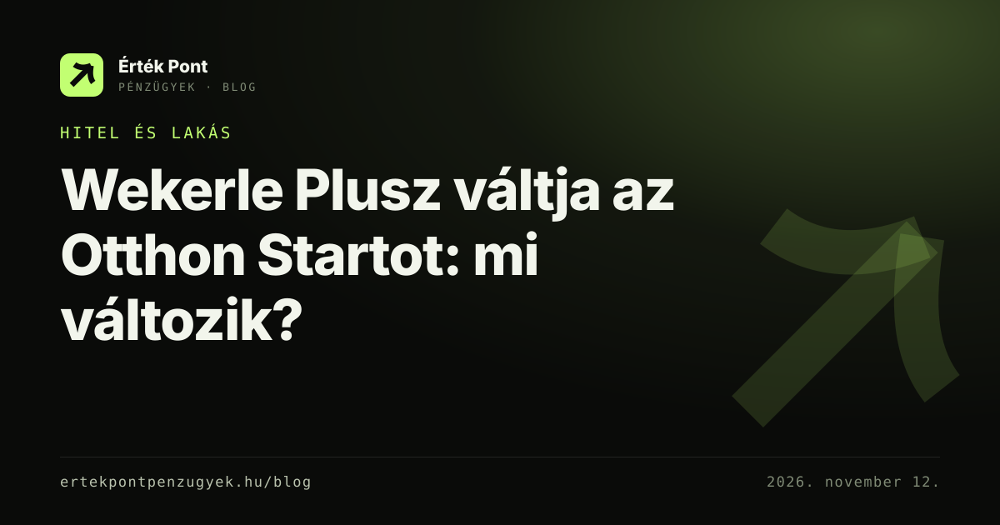

Wekerle Plusz váltja az Otthon Startot: mi változik?
November 15-én lezárul az Otthon Start, a helyére a Wekerle Plusz lép: 3% új, 5% használt lakásra, 45 éves korig. Megmutatom, mit jelent ez forintban.
Minden cikk, ami ezt a témát érinti.

November 15-én lezárul az Otthon Start, a helyére a Wekerle Plusz lép: 3% új, 5% használt lakásra, 45 éves korig. Megmutatom, mit jelent ez forintban.
Örökzöld útmutatók kalkulátorral: Tudástár · Feliratkozás hírolvasóval: RSS-feed
Kérj visszahívást, és megnézzük, mit jelent a friss változás a te hiteledre, megtakarításodra vagy biztosításodra. A tanácsadás díjmentes.
Tímár Richárd, pénzügyi tanácsadó — nem call center, én hívlak vissza. Elérhetőség: hétköznap 9–19 óra.